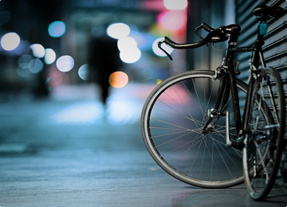
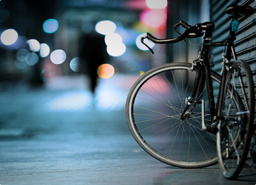

Optimized for all devices
TRICT has been designed to be fully responsive on all devices
TRICT has been designed to be fully responsive on all devices

This multipurpose theme is especially created to be used for different projects.

This multipurpose theme is especially created to be used for different projects.


 
